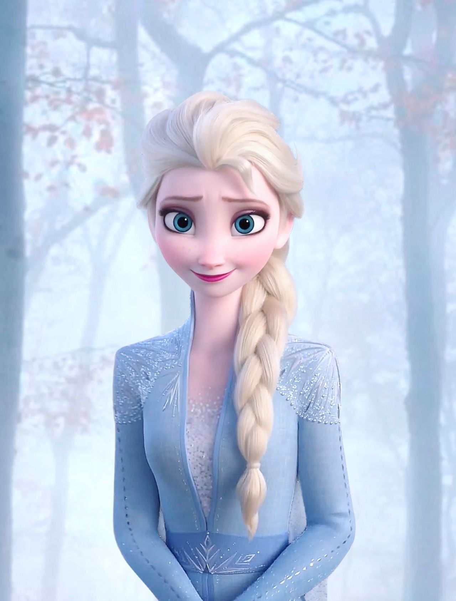
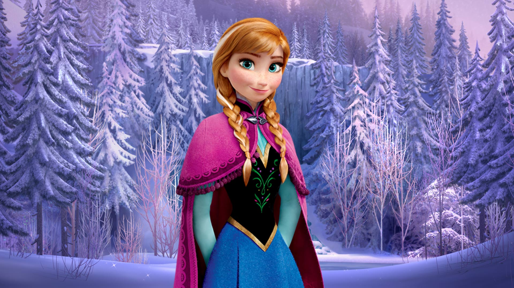
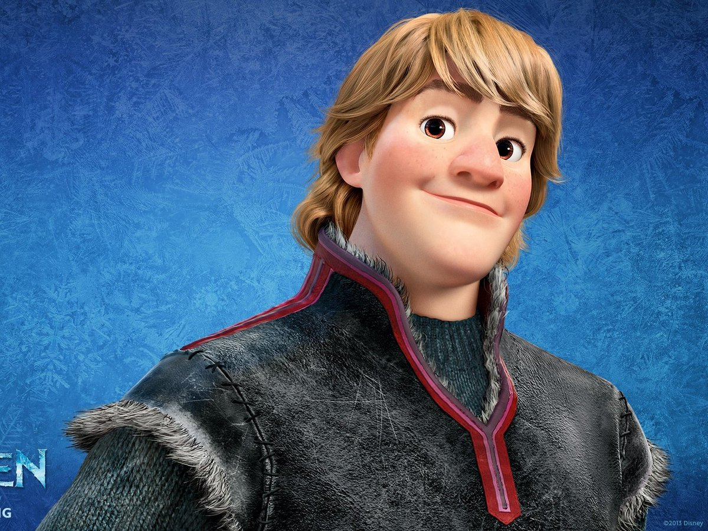
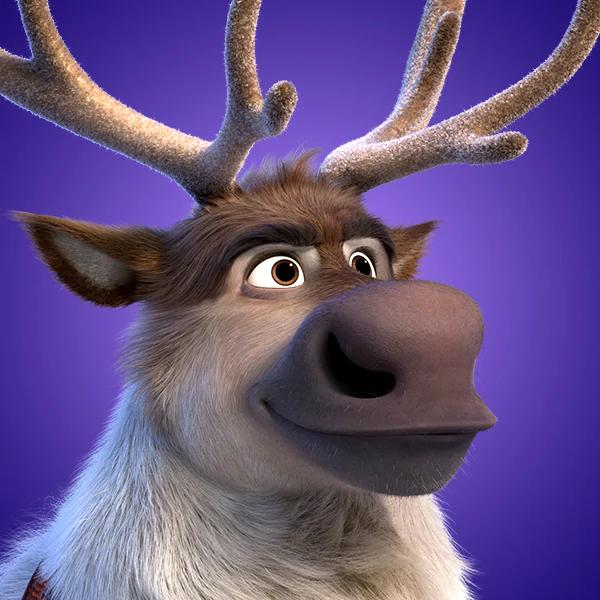
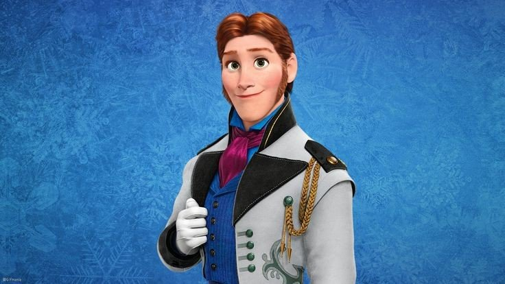
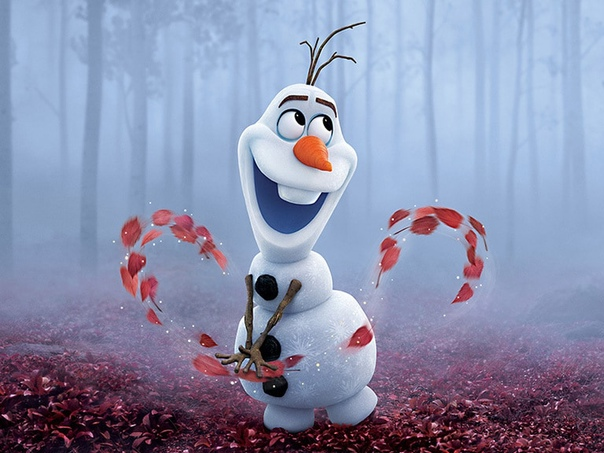

Холодное сердце

 Эльза — спокойная, сдержанная и уравновешенная молодая девушка, под изящной внешностью которой скрывается довольно сложная личность: благодаря травматическому инциденту, пережитому в детстве, она большую часть своей жизни была обеспокоена своими магическими способностями. В детские годы Эльза сильно заботилась о своей младшей сестре Анне и была довольно игривой, а потому использовала своё волшебство, чтобы подурачиться или повеселиться.
⁂⁂⁂
В отличие от своей старшей сестры Эльзы, Анна более оптимистична, в чем-то активна, неловкая и далеко не элегантная. Она часто действует без предупреждения и может быть довольно импульсивной. Анна — свободолюбива, и потому рвётся провести свою жизнь за пределами ворот замка, которые на протяжении многих лет защищали город от ледяного колдовства Эльзы. По воле случая в сюжете мультфильма "Холодное сердце" Анна встречает Кристофа, своего будущего мужа и возлюбленного.
⁂⁂⁂
Кристоф — славный малый и настоящий любитель природы. Он живет высоко в горах, добывает лед и продает его жителям столицы Эренделла. Неотесанный с виду, Кристоф на самом деле — сильный, честный и преданный. Проведя большую часть своей жизни без какого-либо реального контакта, кроме троллей и Свена, Кристоф стал индивидуалистом и поэтому предпочитает всегда действовать в одиночку. Он также бывает довольно ворчливым, ленивым и временами эгоистичным, но за всеми этими недостатками скрывается золотое сердце.
⁂⁂⁂
Свен - транспортное средство Кристоффа, а также лучший друг. Выглядит, как красивый бело-коричневый северный олень. Он добродушный, весёлый и довольно умный. Предан своему хозяину и друзьям, никогда не бросает их в беде. Очень любит морковку, однако всегда делит её с Кристоффом пополам.
⁂⁂⁂
Принц Ханс Южных остров - неудавшийся муж принцессы Анны и лицемерный злодей в мультфильме. На первый взгляд Ханс очень милый и добрый юноша, но является одним из самых негативных персонажей Дисней. Ханс был тринадцатым принцем Южных Островов, но он не мог стать королем, для этого ему надо было жениться на принцессе. Узнав о коронации Эльзы, он приплыл в Эрандел, где встретил юную принцессу Анну, которая очень жаждала любви. Принц предложил ей руку и сердце. Принцесса думала, что их любовь с Хансом будет вечной, но оказалось, что Ханс просто хотел заполучить трон в Эранделе и стать королём. Для этого ему нужно было обручиться с Анной, а после убить королеву Эльзу и отравить Анну. Но принцу Хансу так и не удалось осуществить задуманное, так как любовь побеждает зло. Когда Эльза сумела сдержать магию, принцесса издала приказ: отвезти принца Ханса на Южные Острова, чтобы старший брат решил его судьбу.
⁂⁂⁂
Олаф - добрый, чародейский снеговик, оживлённый магией Эльзы. Наряду со способностью собирать свое тело, самый выдающийся недостаток Олафа - это его любовь к лету и присущему этому времени года теплу. Олаф очень позитивный и оптимистичный персонаж который пытается всем угодить, никогда не грустит и часто попадает в смешные ситуации, так как он сделан из снега, а его отличие от строения человека очень часто создает забавные моменты и диалоги. Но, в то же время он выдаёт весьма умные мысли.